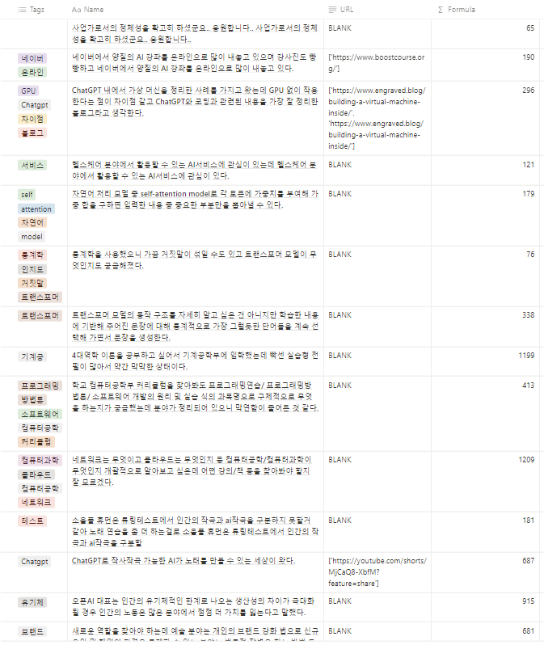

Insight
채팅방 위키가 필요한 이유
채팅방 형태의 커뮤니티의 문제점?
떠내려간 정보
사람들은 채팅방에서 다양한 정보들을 주고받지만, 지나간 채팅을 찾아보기가 힘든 상황이 있습니다.
불필요한 정보
오픈채팅방의 경우 하루에도 수없이 많은 대화가 지나가기 때문에 정작 유용한 정보는 그 중 일부에 불과합니다.
방대한 정보
몇 백개가 넘은 채팅을 모두 읽어보기에는 시간이 부족하고 지루합니다.
채팅방 위키는 이런 문제를 해결하기 위한 서비스입니다.
‘채팅방 위키’의 위키 사이트를 이용한 정리된 문서는 접근성이 높아 유용하게 사용될 수 있습니다.
또한 특정 관심사로 모인 여러 사람이 사용하는 게시판에도 내용을 자동으로 정리할 수 있도록 하여 중복된 질문이 나오는 일을 방지할 수 있고, 원하는 응답이 사전에 나왔는지 확인할 수 있습니다.
채팅방 위키(Chat WiKi)의 주요 기능:
위키 형식으로 채팅 내용을 효율적으로 정리
"대화 내용을 정리, 요약하여 위키 형식으로 필요한 부분만 볼 수 있도록 합니다."
빠른 검색으로 원하는 정보를 쉽게 찾기
"효율적으로 축약된 정보와 태그로 빠르게 원하는 정보를 찾을 수 있습니다."
중요한 대화를 강조하고 요약
"T5를 이용하여 대화의 핵심 키워드가 추출될 수 있도록 요약하여 불필요한 잡담을 줄였습니다."
공동 편집과 지식 공유
"위키형식으로 공동으로 관리하여 잘못된 정보를 바로잡고 직접적으로 지식을 공유할 수 있습니다."
직관적인 인터페이스로 쉬운 탐색
"노션 데이터베이스를 이용하여 직관적으로 태그, 요약문, 관련 url까지 볼 수 있습니다."
